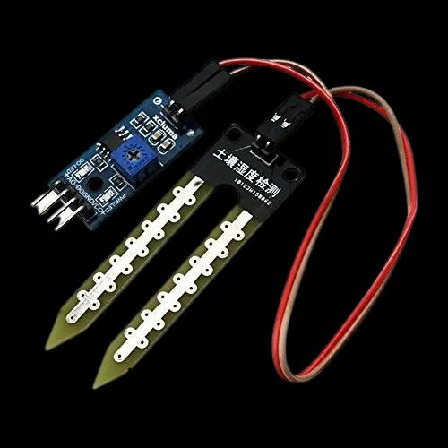
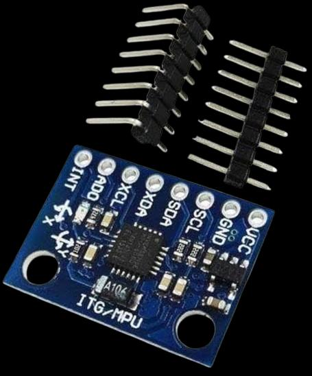
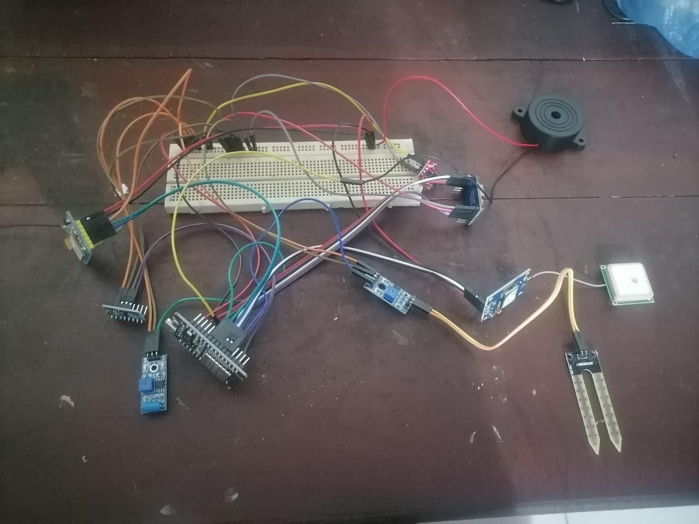

Soil Moisture Sensor
Captures soil condition data that can indicate increasing saturation.
A multi-sensor field node combines local processing, long-range communication and power support to turn environmental readings into usable warnings.
The presentation identifies soil moisture, rainfall, tilt/ground movement and GPS as core field inputs.

Captures soil condition data that can indicate increasing saturation.

Provides continuous rainfall measurement for the monitoring pipeline.

Supports monitoring of ground movement or orientation changes.

Location data and field sensor readings are coordinated through the main electronics.
The communication layer shown in the presentation uses LoRa together with Wi-Fi/GSM. This creates options for sending warning and monitoring information depending on field connectivity.
Designed for low-power, long-range communication between field components.
Provides an additional path for warnings where cellular connectivity is available.
Supports connected monitoring when Wi-Fi access is available.

The source presentation lists Arduino, Edge Impulse and Firebase alongside the communication technologies, while the research comparison describes Edge AI on ESP32.
Used for local sensor processing and on-device inference in the proposed system.
Used to train and evaluate the machine-learning models shown in the results.
Included in the technology stack presented for embedded system integration.
Shown in the presentation as part of the broader monitoring technology stack.

The proposed solution calls for solar power and low-energy operation to support 24/7 monitoring. The project also emphasizes affordability, compact design and ease of deployment in rural and resource-limited areas.
Field evidence in the presentation shows a completed main unit, rain gauge subsystem and separate alarm unit.
View completion evidenceThe presentation outlines a future commercialization path covering product development, target-region strategy, government partnerships, subscription services, public awareness and continuous technical support.
This section is presented as a future direction rather than a confirmed commercial launch plan.